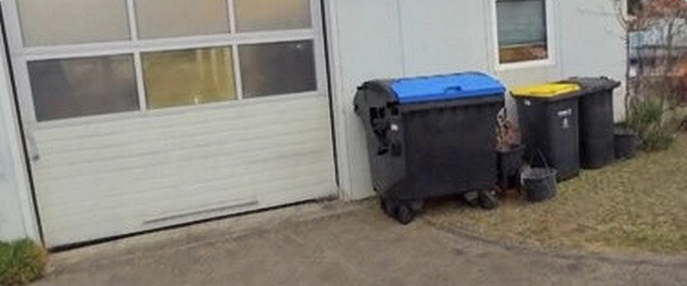
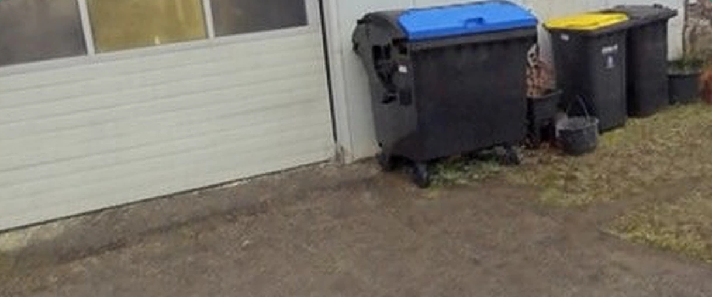
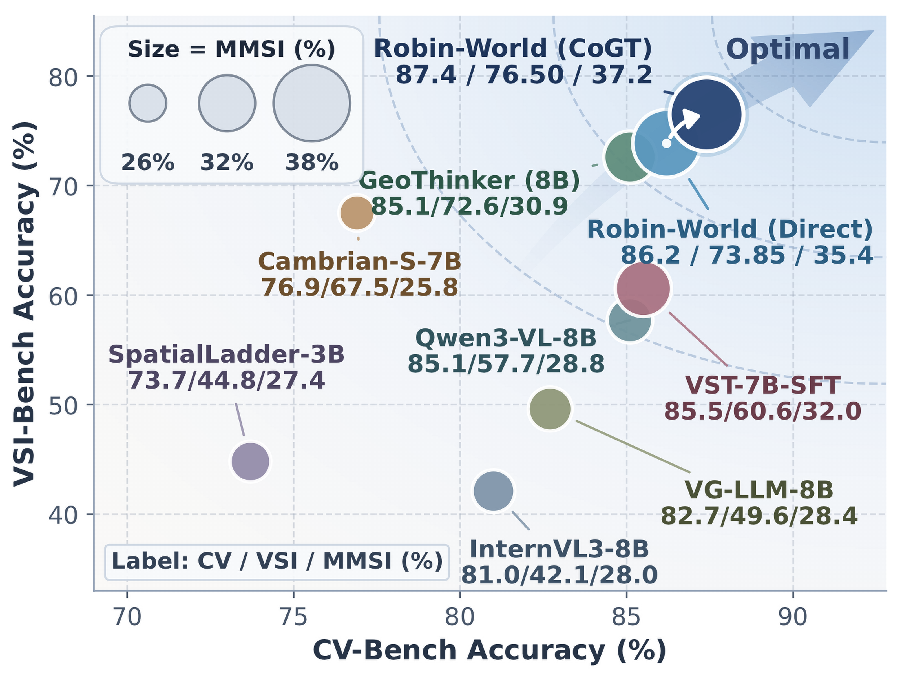

Unified Spatial Foundation Model
Explore four spatial pillars
 Robin-World
Robin-World
Unifying 3D Spatial Reasoning and World Simulation
Unifying 3D Spatial Reasoning and World Simulation
Select a capability to see which inputs it uses and watch its demo.
Select a capability to trace its signal paths.

Qwen3-VL’s layer-50 state conditions SolarWM-H3 DiT, and CoGT feeds the generated geometry back into Qwen3-VL.
132.0M samples and frames
Estimates camera pose from a single view and refines it using perspective fields.
The overlay marks gravity-aligned pixel up-vectors, the horizon, and latitude curves.
With η = 0.85, closed-loop feedback reduced pose-control error by 41.9%.



Predicts perspective fields, inverse depth, and surface normals, then lifts 3D point clouds without known camera intrinsics.


The point cloud follows the scene selected in Dense Map Showcase.
Spatial-Grounded Fusion gives Qwen3-VL generated geometry to answer spatial questions.

Explore 6-DoF rollouts alongside their ground-truth camera trajectories.
The scene moves while the camera holds still. At the freeze, the camera moves through that instant. In the plaza clip, it returns to its starting position and the pedestrians resume walking.
Generated from a WILDTRACK plaza image. The crowd freezes at 6.00 s and resumes walking at 11.27 s.
The moving opening and ending are simulated. The 158-frame frozen orbit is generated using multi-view RGB-D guidance.
20.42 dB PSNR and 0.934 static consistency across 128 clips.
Select a capability to compare Robin-World with other methods.
| Approach | Roll↓ | @1↑ | @5↑ | @10↑ | Pitch↓ | @1↑ | @5↑ | @10↑ | vFoV↓ | @1↑ | @5↑ | @10↑ |
|---|---|---|---|---|---|---|---|---|---|---|---|---|
| UVP | 0.51 | 69.20 | 81.60 | 86.90 | 4.59 | 21.60 | 36.20 | 47.40 | 10.92 | 8.20 | 18.70 | 29.80 |
| GeoCalib | 0.36 | 82.60 | 90.60 | 94.00 | 1.94 | 32.40 | 53.30 | 67.50 | 5.46 | 13.60 | 31.70 | 48.20 |
| AnyCalib | — | — | — | — | — | — | — | — | 3.14 | 19.40 | 40.80 | 59.10 |
| Puffin | 0.32 | 84.90 | 93.40 | 96.20 | 1.08 | 47.60 | 68.20 | 79.40 | 2.42 | 23.90 | 47.80 | 64.10 |
| Puffin-World | 0.28 | 87.70 | 94.20 | 96.70 | 1.01 | 49.70 | 69.30 | 79.60 | 2.41 | 24.80 | 48.80 | 65.50 |
| Robin-World (Direct) | 0.27 | 87.90 | 94.55 | 96.95 | 0.94 | 52.10 | 71.40 | 81.20 | 1.65 | 34.20 | 59.80 | 74.45 |
| Robin-World (CoGT) | 0.24 | 89.20 | 95.55 | 97.50 | 0.81 | 56.85 | 74.80 | 84.45 | 1.57 | 35.90 | 61.10 | 75.28 |